[CentOS] PHPインストールする方法
こんにちは。明月です。
PHPとは「apache」サーバの基盤で動作するウェブスクリプトプログラム言語です。PHPはJavaとC#と比べてコンパイル言語ではなく、スクリプト言語です。
PHPの良い点は軽く、早く開発できるし、サーバの再起動がなしでソース修正が可能なことが利点ではないかと思います。悪い点はやはりスクリプト言語なので、サイトが大きくなると遅くなるしソース管理が難しくなるということです。
まぁ。開発者の腕によって違うことですからね。
それではCentOSでPHPをインストールしましょう。
PHPの場合は「yum」を通ってインストールしましょう。
先、listを通ってPHPを確認しましょう。でも、PHPバージョンが低いですね。。。現在は「PHP7」なのに。。「yum」ではなく、直接にインストールしましょう。
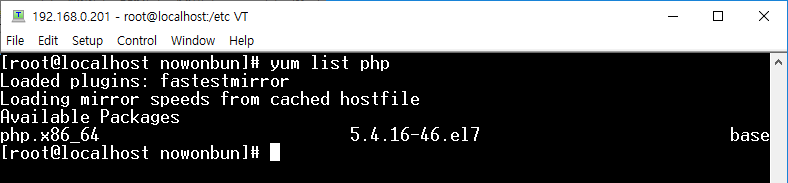
yum install http://rpms.remirepo.net/enterprise/remi-release-7.rpm
yum install epel-release yum-utils
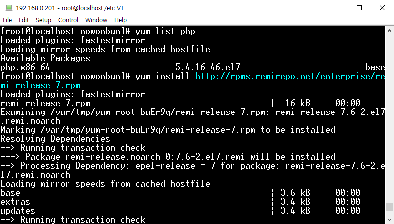
「yum」のconfigで「php5.4」を非活性化して「php7.3」を活性化しましょう。
yum-config-manager --disable remi-php54
yum-config-manager --enable remi-php73
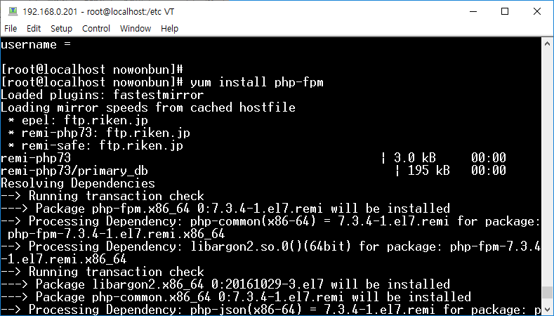
yum install php-fpm
yum --enablerepo=remi-php73 install php
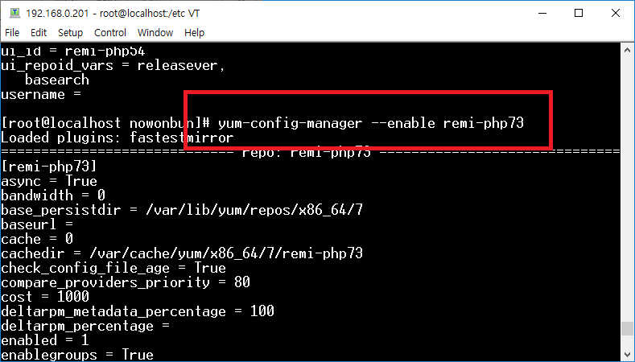
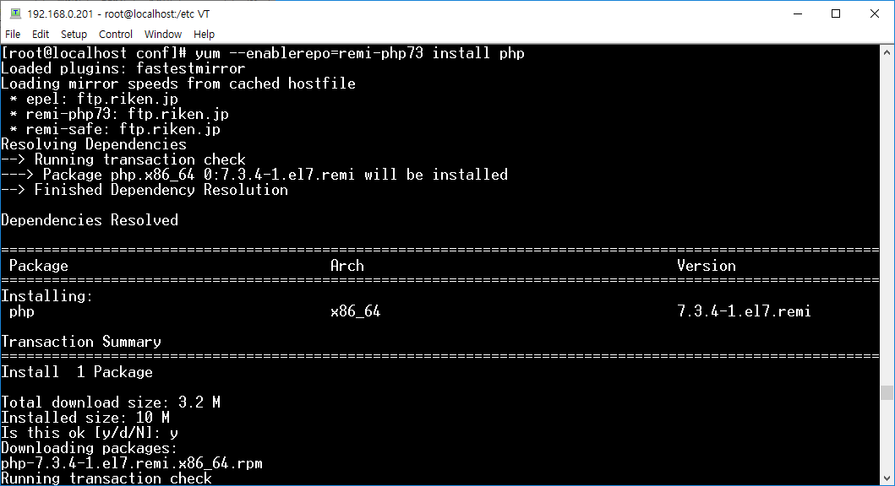
これからインストールする雰囲気になります。
PHPと関係あるライブラリをインストールしましょう。
yum install redis memcached
yum install php-fpm php-cli php-redis php-brotli php-gd php-gmp php-imap php-bcmath php-interbase php-json php-mbstring php-mysqlnd php-odbc php-opcache php-memcached php-tidy php-pdo php-pdo-dblib php-pear php-pgsql php-process php-pecl-apcu php-pecl-geoip php-pecl-gmagick php-pecl-hrtime php-pecl-json php-pecl-memcache php-pecl-mongodb php-pecl-rar php-pecl-pq php-pecl-redis4 php-pecl-yaml php-pecl-zip
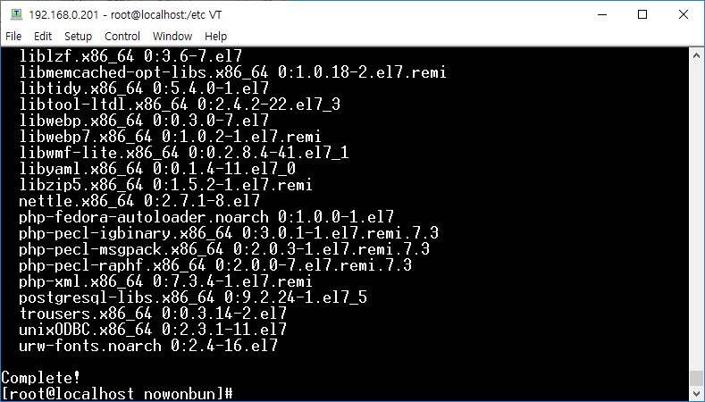
インストールが完了でサービスを活性化します。
systemctl enable php-fpm
systemctl start php-fpm
これで「php-v」でPHPのバージョンを確認すればPHPがよくインストールされていることを確認できます。
でも、ただのPHPインストールだけではなく、「apache」を通ってPHPが動くことを確認しなければ完了ではないですね。
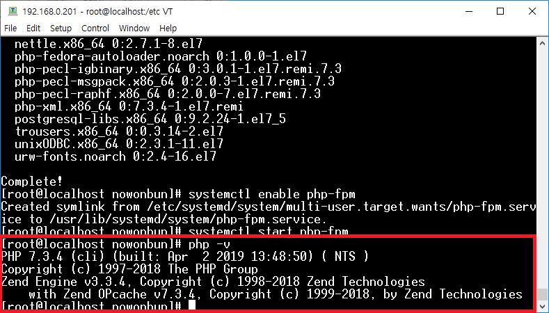
これから「httpd」の環境設定ディレクトリに移動しましょう。
cd /etc/httpd/conf
vi httpd.conf
httpd.confの下の部分で下記の構文を追加しましょう。
AddType application/x-httpd-php .php .php3 .html .htm
AddType application/x-httpd-php-source .phps
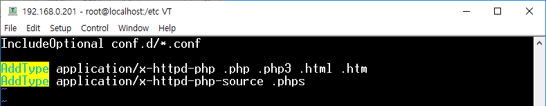
そして「dir_module」でスタートページで「index.php」を追加しましょう。
<IfModule dir_module>
DirectoryIndex index.html index.php
</IfModule>
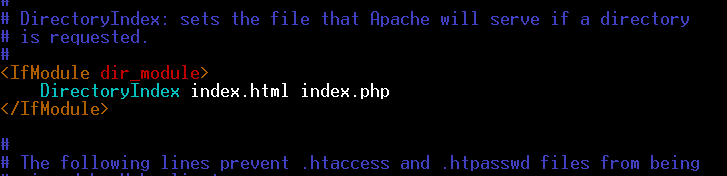
そして「/var/www/http」のディレクトリに「phpinfo.php」ファイルを作成して下記の内容を入れましょう。
<?php
phpinfo();
?>
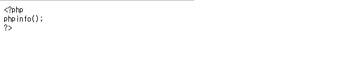
そしてブラウザで./phpinfo.phpに接続しましょう。
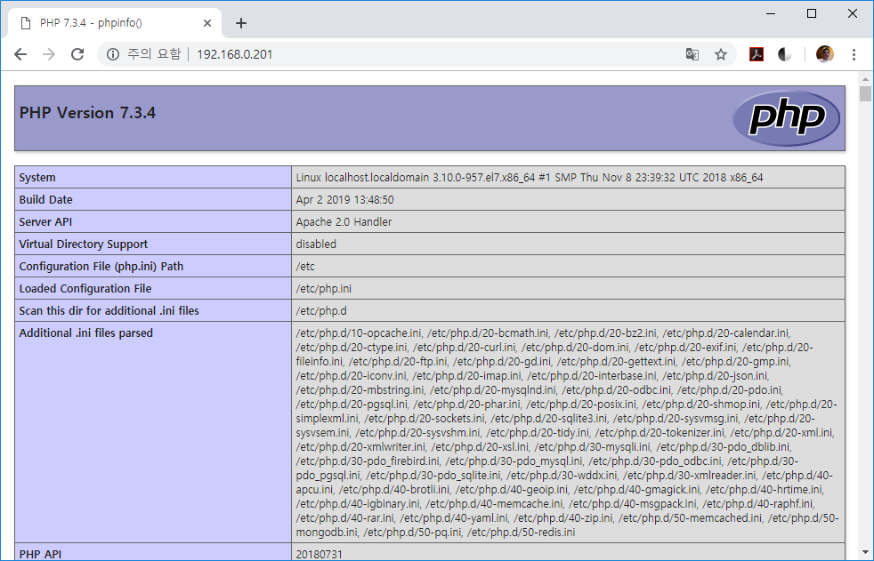
上のPHPの仕様に関して表がでればインストール成功です。
- [Ubuntu] PHPをインストール、Composer設定する方法2019/11/13 07:32:21
- [Ubuntu] テーマ(Arc)を変更する方法(tweak)2019/11/12 07:32:13
- [Ubuntu] Apache2をインストールする方法2019/11/11 07:28:28
- [Ubuntu] 「acquire the dpkg frontend lock」のエラーを解決方法2019/11/10 22:19:34
- [Ubuntu] JavaインストールとEclipseをインストールする方法2019/11/08 07:29:55
- [Ubuntu] MariaDB(Mysql)をインストールする方法2019/11/07 07:50:58
- [Ubuntu] Chromeをインストールする方法2019/11/06 19:48:19
- [CentOS] YUMについて、YUMが出来ない場合処理方法2019/11/05 07:17:58
- [CentOS] MariaDB(Mysql)をインストール2019/11/04 18:35:10
- [CentOS] FTPインストールする方法(vsftpd)2019/11/01 07:29:57
- [CentOS] SAMBAインストール方法2019/10/30 07:38:57
- [CentOS] PHPインストールする方法2019/10/29 20:09:03
- [CentOS] ApacheとTomcatの連携2019/10/29 07:28:33
- [CentOS] Tomcat インストール方法2019/10/28 22:38:56
- [CentOS] Java インストール2019/10/28 00:22:32
- [C#] コマンド(cmd)を実行する方法(Processクラス)2020/03/31 07:15:40
- [C#] FTPに接続してファイルダウンロード、アップロードする方法2020/03/27 19:20:14
- [C#] HttpWebRequestを利用してウェブページを読み込みする方法2020/03/27 00:23:19
- [C#] Base64のエンコード、デコードする方法2020/03/26 02:19:50
- [Java] 日付フォーマット(SimpleDateFormat)を使う方法2020/03/25 00:36:53
- [Java] サーブレット(Servlet)の環境でファイルアップロード(プログレスバーでファイルアップロード状態を表示する方法)する方法2020/03/24 00:48:21
- [Java] Spring環境でファイルアップロード(プログレスバーでファイルアップロード状態を表示する方法)する方法2020/03/22 23:15:12
- [Java] FTPに接続してファイルをダウンロード、アップロードする方法(FTPClient)2020/03/20 02:44:36
- [Window] WindowでFTPサーバを構築する方法2020/03/19 03:27:22
- [Java] JSPのSpring環境でschedulerのcronを使う方法2020/03/18 00:24:32
- [Java] POIを利用してExcelを扱う方法2020/03/17 01:48:00
- [Java] PDFを出力する方法(itextpdf)2020/03/13 00:47:31
- [Java] ログライブラリ(log4j)を使う方法2020/03/12 00:54:39
- [Java] Jsonタイプのデータを使う方法(Gsonライブラリ)2020/03/11 00:30:15
- [Java] Base64をエンコード、デコードする方法2020/03/09 10:24:01